關於東京車站
1.東京車站的特色
東京車站的總面積為18萬2千平方公尺，每天搭車人數超過45萬人，十分熱鬧。位於丸之內側，用紅磚瓦建造的丸之內站房也是東京的地標之一。東京車站一共有28個月台，是日本最大規模的車站。如果是第一次來到東京車站的人，勢必會因為車站複雜的構造和人山人海的景象感到很驚訝吧！
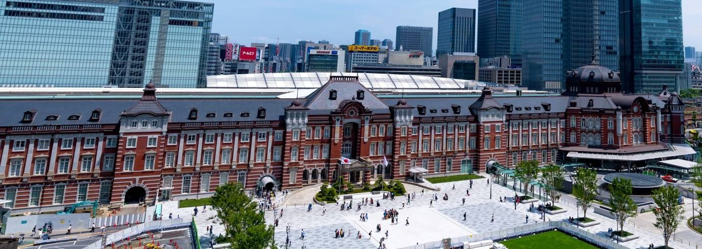
2.東京車站的構造（從東京車站搭乘JR電車的人）
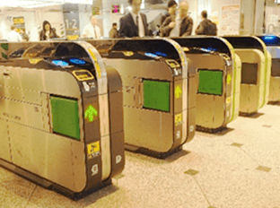
對從日本國外來的旅客來說，也許看到車站有檢票口會覺得奇怪。檢票口可能是亞洲鐵路的特徵。要搭電車前一定要通過檢票口。通過檢票口時需要車票或IC卡。通過檢票口後，就需要找到您要搭的列車從幾號月台出發。
如果旅客持有的是日本鐵路通票（Japan Rail Pass）或JR東日本鐵路周遊券（Japan East Pass），是不能通過檢票口的。請在有站員的檢票窗口出示Pass上的日期再進入。
車站內有像這樣的看板。如果不知道自己要搭的電車從幾號月台出發，請詢問站員或服務台。
※東京車站有不只一個1號月台、2號月台、3號月台、4號月台。搭乘京葉線、成田特快、總武線、橫須賀線、中央線的旅客請小心留意！以上資訊應該就能協助您到達月台了。
想通過檢票口進到站內購物的旅客，或是沒有要搭電車但想進到站內的旅客，需要購買入場券（月台票）。請事前在購票機購買入場券，通過檢票機進入站內。入場券的有效時間是購買後的2小時。
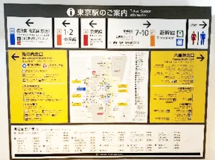
3.東京車站的構造（搭乘JR線從其他車站來的時候）
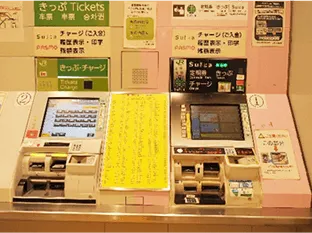
搭乘JR線來到東京車站的人，下電車後最好先在月台上停下來。如果人潮擁擠，就到不會擋到人的地方停下來吧！
抬頭就會看到看板，黃色的是「出口」，白色的是「站內的設施介紹」。請根據接下來要前往的地方選擇要留意的看板顏色。
如果想到車站外面，請在月台樓層搭電扶梯或電梯之前確認「要去哪個出口」。
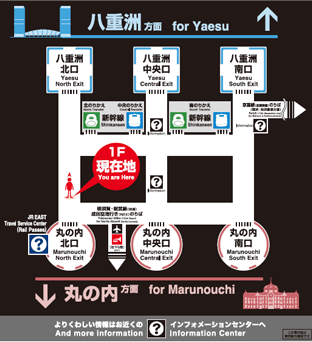
雖然東京車站很大，店鋪林立，人潮眾多，可能會讓人覺得不容易找到路，但其實車站的構造很簡單，東西南北都標示得很清楚。丸之內在西邊，八重洲在東邊，丸之內和八重洲都分別設有北口、中央口及南口。
在車站內的各個地方都張貼了這張地圖，讓您方便確認自己的位置。
車站的看點
1. 丸之內站舍
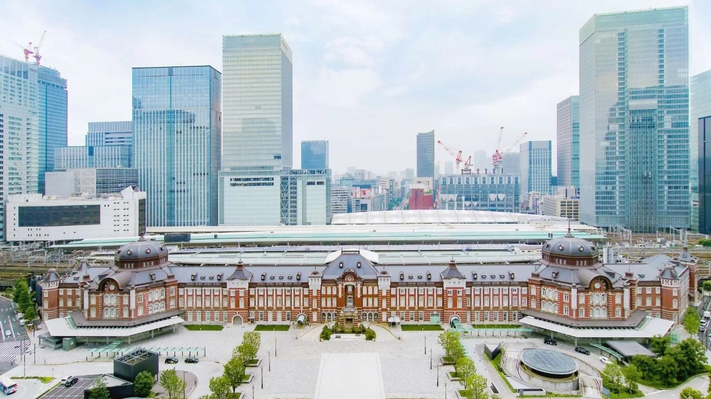
東京車站被稱為通往日本各地的門戶。車站於1908年3月開始動工，於1914年12月正式啟用。由日本近代建築的先驅辰野金吾擔綱設計。2003年被指定為國家重要文化財產。
2012年在盡可能保留現存站舍的目標下，將毀損了的3樓等部分建築恢復成創建當時的風貌。並加上地下樓層的避震設計，以避免大規模地震可能帶來的損害。
高度超過30公尺的南北兩座穹頂的1、2樓，保留了復原部份的厚重感，並賦予符合功能性的新設計。此外，3、4樓和天花板也復原為創建當時的樣貌。8個生肖的彫刻和鷲的浮彫等令人驚歎的細節也不容錯過。
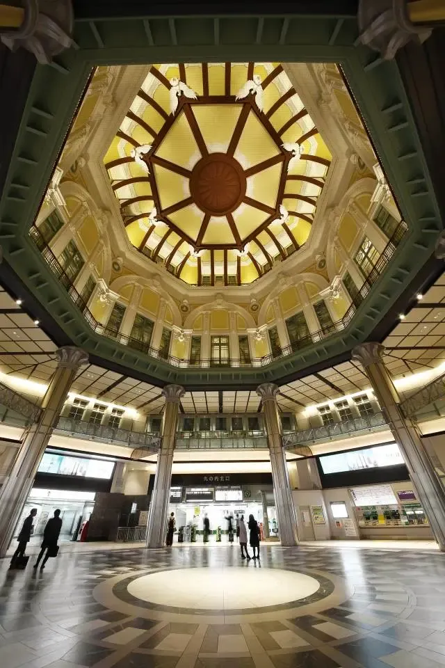
2. 車站畫廊
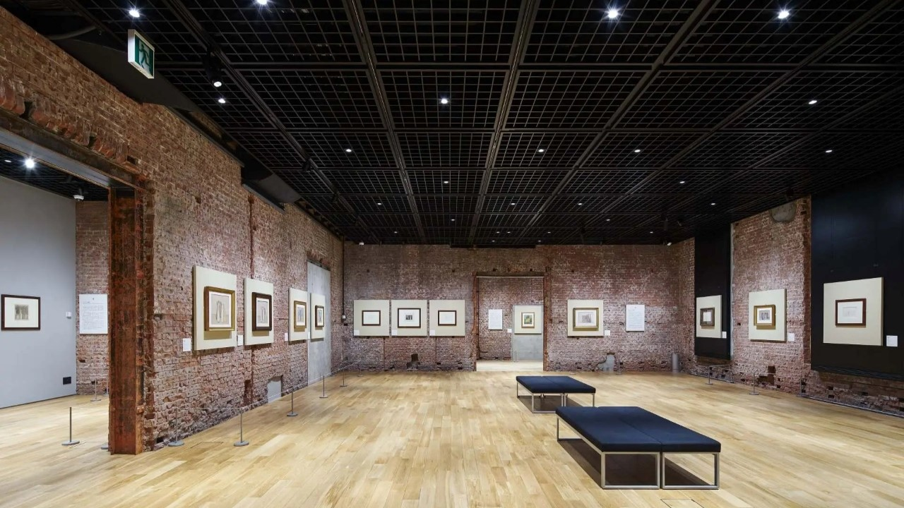
連接各路交通樞紐的東京車站不僅僅是一個通過點，還被作為推廣藝術文化之處，於1988年在「丸之內站舍」內設立了這間畫廊。2006年因車站修復工程暫時閉館，2012年丸之內站舍恢復創建當時風貌並指定為國家重要文化財，東京站畫廊也在站舍北口穹頂內重新開館。
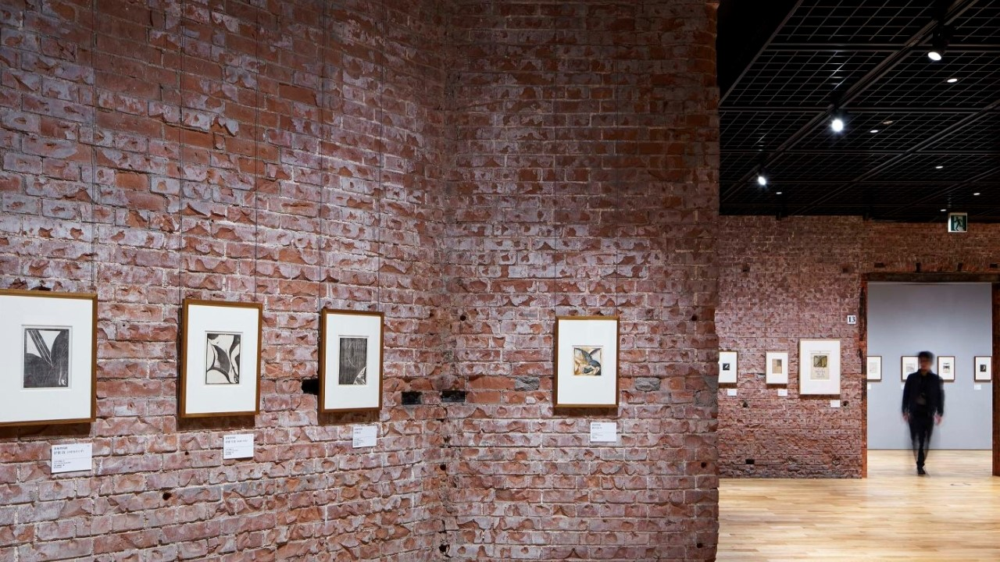
JR東日本規模最大的車站內商業設施「GRANSTA」
東京車站一番街
2. 動漫人物街
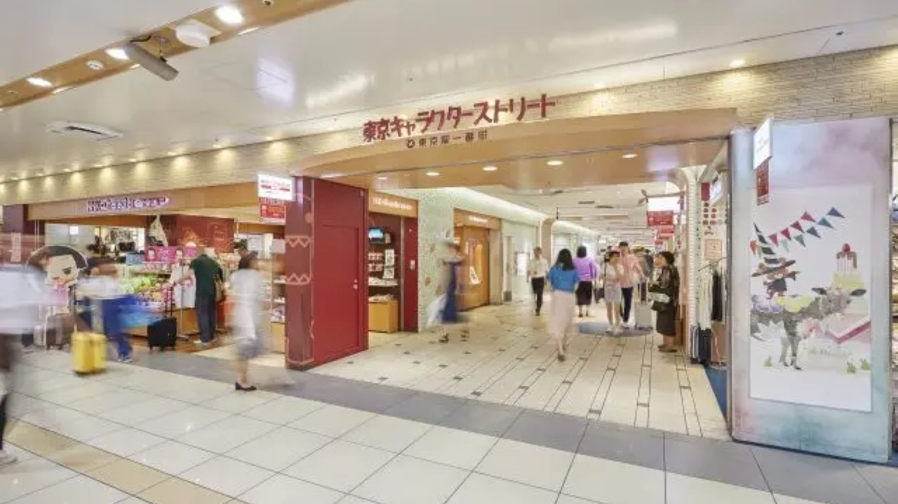
東京動漫人物街匯集了國內外擁有超高人氣的「寶可夢」、「蠟筆小新」、「Precure」、「角落小夥伴」等動漫人物商店。
還有只在「東京動漫人物街」才買得到的商品，是一個讓動畫、漫畫愛好者為之瘋狂的場所。
奪得「日本動漫角色大賞2022最高獎」的人氣動漫人物「吉伊卡哇 (Chiikawa)」官方商品店於2022年9月開幕。
能買到時下流行的動漫人物商品，令所有動漫粉絲為之欣喜雀躍。
此外，在活動場地「一番廣場」內經常舉辦期間限定活動，設施內通道左右兩側也有期間限定的動漫人物商店設攤，不管來過幾次，無論何時造訪，都能讓人滿意而歸。
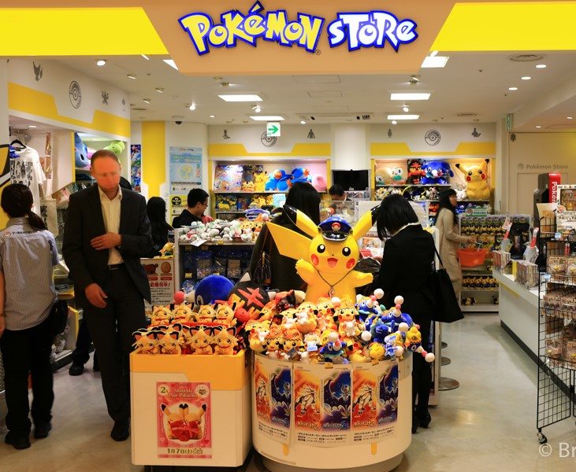
推薦伴手禮
1. 桂新堂「貓熊之旅」
1866年（慶應2年）在名古屋開業的蝦味仙貝老店，推出只在東京販售的限定商品。
仙貝上畫著2隻貓熊在東京觀光名勝前拍攝紀念照、在淺草散步享受美食、觀看相撲比賽等圖案，可愛得讓人捨不得吃。另外還有畫著出發前手拿相機的貓熊，以及暢遊一整天後疲憊得呼呼大睡的熊貓仙貝，充滿趣意。
2. 錦豐琳「花林糖綜合口味」
將日本傳統點心，變化成現代風格的「日本橋錦豐琳」，推出全新口感的花琳糖。這款新型花林糖，把原本裹著黑糖或白糖的長棒狀花林糖，做成方便食用的一口大小，還使用日本食材不斷推出各種不同口味。
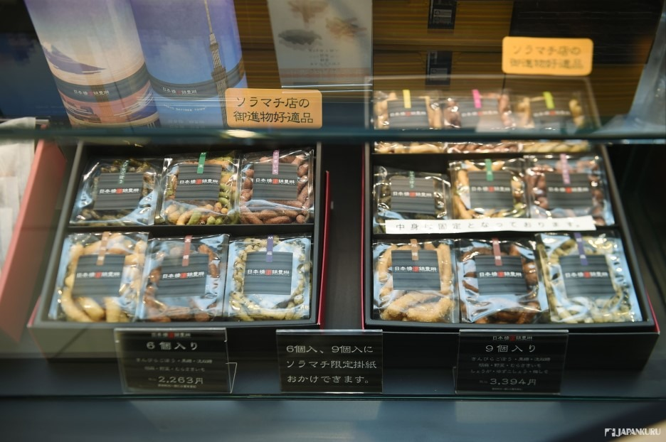
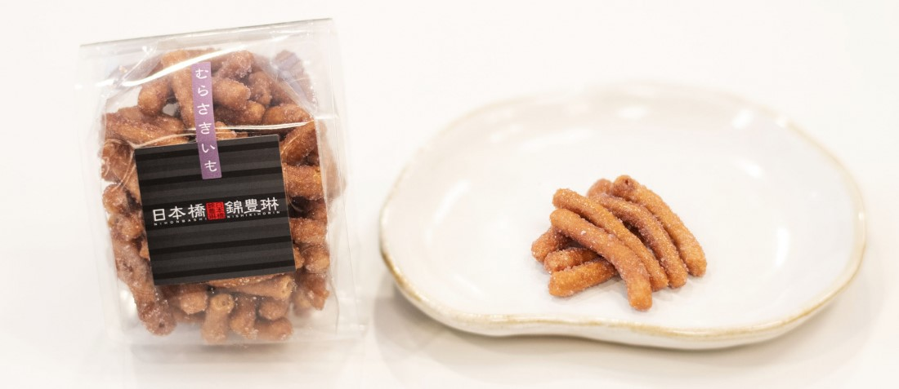
3. 東京香蕉 「東京芭娜娜」
1991年上市，現今儼然成為東京伴手禮經典之最的「東京芭娜娜 找到了！」。烘烤得既蓬鬆又柔軟的海綿蛋糕裡，夾入用香蕉精心製作成香蕉卡士達奶油醬的西式點心。
系列商品另有檸檬、蜂蜜、楓糖、咖啡牛乳、葡萄乾三明治餅乾等，選擇豐富多樣，是東京伴手禮的最佳選擇之一。
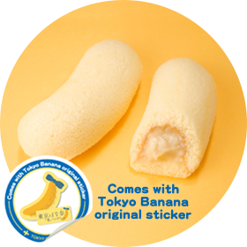